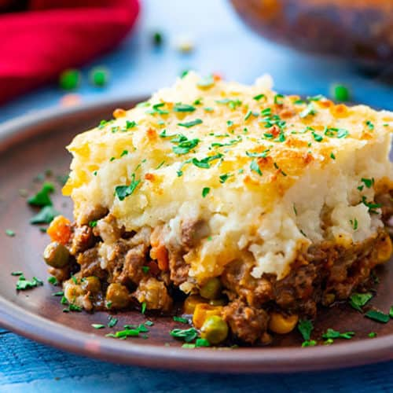

Home
Shepherd pie

Ingredients (for two people)
- 250g of beef mince
- 100g of peas
- 500g of potatoes, finely diced
- 1x onion, finely diced
- 1x egg
- 1x beef stock cube
- 1 tablespoon of mayo
- 2 tablespoons of sweet chilli sauce
- 1 tablespoon of worcestershire sauce
- Salt and pepper
Steps
- Turn the oven on 200C gas mark. Put a pan of water to boil
- Fry the onion in a splash of olive oil. When soft, add the mince and cook throughly
- Add the peas, stock cube, sweet chilli and worcestershire sauce. Mix well with salt and pepper
- Once the water is boiling, add the potatoes and let them cook for 15 minutes
- Strain the water and add the egg, mayo, salt and pepper in the potatoes pan, then mash them.
- Put the cooked mince in the bottom of a large wide oven tray and arrange the mash potatoes on top until it covers the mince
- Oven cook for 20 minutes, then serve hot